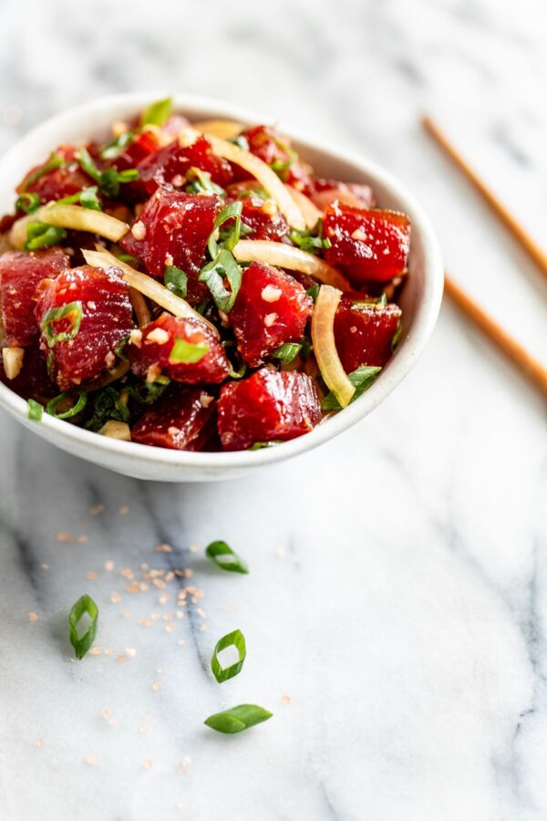

<< Home
Ahi Poke

Description
A traditional hawaiian appetizer made from raw yellowfin tuna. Goes great with a steaming bowl of rice and a beer.
Ingredients
- 1 pound fresh ahi steaks, cut into small cubes
- 1/4 cup soy sauce
- 1/4 cup chopped Maui onion
- 1/4 cup chopped green onion
- 1 chile pepper, seeded and diced (optional)
- 2 teaspoons sesame oil
- 2 teaspoons toasted sesame seeds (optional)
- 2 teaspoons finely chopped toasted macadamia nuts (optional)
- 1 teaspoon grated fresh ginger
- Sea salt to taste
Steps
- In a large mixing bowl, combine all the ingredients and mix carefully ensuring not to mush the ahi steaks
- Cover with saran wrap and refrigerate for at least an hour
- Serve by itself or over a bed of white rice